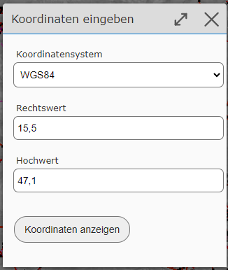

Koordinaten
Koordinaten eingeben und abfragen
Mit dem Koordinaten Abfragen Werkzeug können einerseits Koordinaten durch Klicken in die Karte abgefragt als auch Koordinaten eingegeben und angezeigt werden.
Bemerkung
Tip: Das Werkzeug kann nicht nur über den Werkzeugkasten aufgerufen werden, sondern öffnet sich auch, wenn man auf die mitlaufenden Koordinaten im Kartenviewer klickt:

Möchte man zu einer bestimmten Koordinate springen, erfolgt dies über das Sub-Werkzeug Koordinaten eingeben. Zuvor empfiehlt es sich auch einmal die Eingabe Tipps aufzuklappen, wo unterschiedliche Eingabemöglichkeiten für geographische und projizierte Koordinaten gezeigt werden.
Koordinaten werden in folgendem Dialog eingegeben:
In der Auswahlliste muss zuerst ein Koordinatensystem ausgewählt und danach in den Eingabefeldern Rechts- und Hochwert eingetragen werden. Durch Bestätigen des Dialogs mit Koordinate anzeigen wechselt der Kartenausschnitt zur gewünschten Position und es wird ein Marker angezeigt.
Bemerkung
Tipp: Will man nur zu einem Punkt mit bekannten geographischen Koordinaten springen, besteht auch die Möglichkeit, die Koordinaten in die Schnellsuche einzutragen (siehe Abschnitt Suchen und Abfragen).
Marker können ebenfalls durch einen Klick in die Karte erzeugt werden. Wird der Kartenviewer am Desktop verwendet, werden die Koordinaten in einer Listenansicht im Werkzeugdialog angezeigt:

In der Auswahlliste über der Koordinatenliste kann ein Koordinatensystem gewählt werden. In dem hier gewählten Koordinatensystem werden die Koordinaten in der Liste angezeigt.
Bemerkung
Mit dem Koordinaten Werkzeug werden neben XY Koordinaten auch Höhen angezeigt.
Mit dem Button Marker entfernen verschwinden alle Marker aus der Karte und Einträge aus der Liste.
Koordinaten herunterladen
Die Liste der Koordinaten kann als CSV Datei herunter geladen werden. Dazu dient das Sub-Werkzeug Koordinaten herunterladen (CSV). Heruntergeladen werden die Koordinaten in dem Koordinatensystem, das aktuell für die Koordinatenliste ausgewählt ist. Es wird also die Liste so herunter geladen, wie sie im Werkzeugdialog angezeigt wird (inklusive Höhenwerte).
Bei CSV handelt es sich um eine Text Datei, die in jedem Texteditor geöffnet werden kann. Auch Tabellenkalkulationsprogramme wie MS-Excel können mit dieser Datei in der Regel umgehen:

Koordinaten hochladen
Eine Koordinatenliste kann ebenfalls hochgeladen werden. Die Daten müssen hier ebenfalls in einer CSV Datei vorliegen (Trennzeichen muss ein Strickpunkt sein, als Komma wird Beistrich oder Punkt akzeptiert):

Beim Hochladen muss in einem Dialog zuerst das Koordinatensystem angegeben werden, in dem die Koordinaten vorliegen. Danach kann die Datei hochgeladen werden.
Ist der Upload erfolgreich, werden die Koordinaten durch Marker in der Karte markiert und als Koordinatenliste im Werkzeugdialog angezeigt.
Bemerkung
Für jede Koordinate werden auch die Höhen immer wieder neu ermittelt.
Koordinaten projizieren (umwandeln)
Mit den oben gezeigten Methoden ist es auch möglich, Koordinatenlisten von einem Koordinatensystem in ein anderes zu überführen. Voraussetzung ist dabei, dass die gewünschten Koordinatensysteme vom Kartenviewer angeboten werden.
Die Vorgehensweise ist dabei folgende:
Koordinatenliste als CSV hochladen
In der Karte kontrollieren, ob alle Koordinaten korrekt hochgeladen wurden. Falls die Lage dort nicht richtig ist, wurde beim Hochladen wahrscheinlich ein falsches Koordinatensystem angegeben.
Im Werkzeugdialog für die Koordinatenliste das gewünschte Ziel-Koordinatensystem auswählen
Koordinaten im CSV Format herunterladen